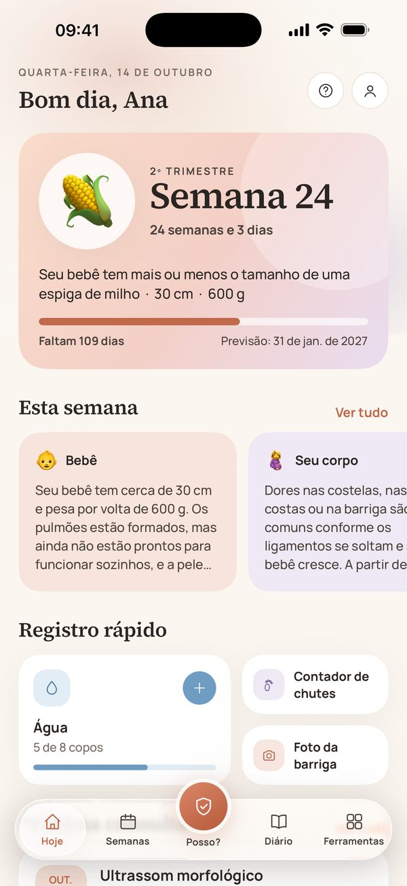
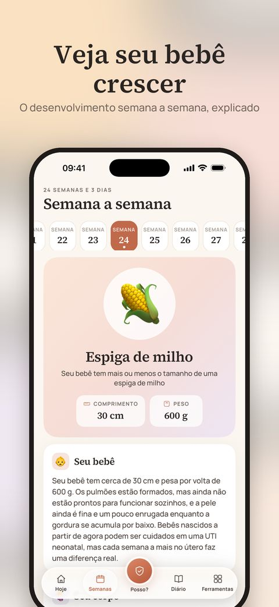
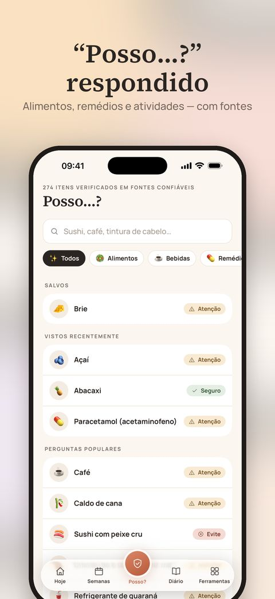
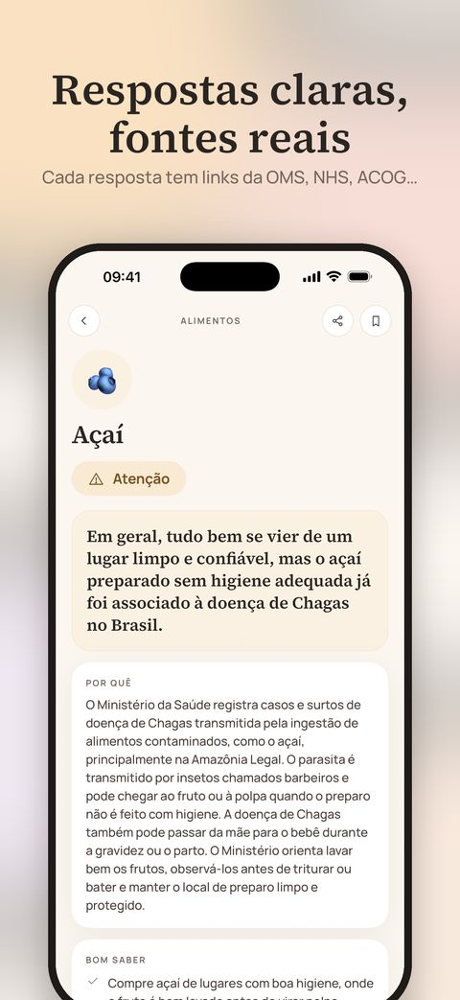
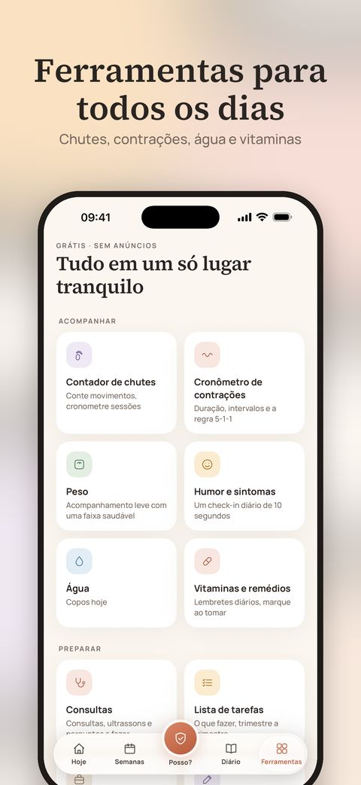
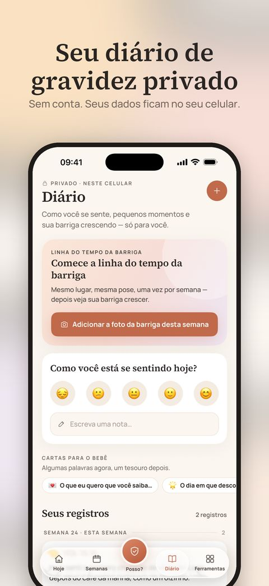

English · Türkçe · Español · Deutsch · Français · Português
Uma companhia tranquila para os próximos nove meses.
Orientações semana a semana, respostas claras para “Posso…?” com fontes reais e ferramentas gentis para o dia a dia — tudo privado, direto no seu iPhone.
Baixar na App StoreGrátis · iPhone · Sem precisar de conta

Tudo o que você procura, em um só lugar
Semana a semana
O tamanho do seu bebê, o que está se desenvolvendo, o que você pode sentir e três dicas práticas para cada semana, da 1 à 42.
“Posso…?” respondido
270+ alimentos, medicamentos, produtos de beleza e atividades — cada um com um veredito claro, o porquê e links para as orientações em que se baseia.
Isso é normal?
55 sintomas comuns explicados com calma, com o que ajuda e sinais claros de quando ligar para sua obstetra, seu médico ou o serviço de emergência.
Ferramentas gentis
Contador de chutes e cronômetro de contrações com Atividades ao Vivo na Tela Bloqueada, além de widgets, consultas, água, vitaminas e muito mais.
Um diário só seu
Fotos da barriga, humor, anotações e cartas para o seu bebê. Não há conta — seu diário nunca sai do seu celular.
Feito para onde você vive
Em English, Türkçe, Español, Deutsch, Français e Português, com alimentos locais, orientações nacionais e o número de emergência do seu país.
Veja de perto





🔒 Privacidade desde a concepção
Sem anúncios, sem análises, sem rastreamento e sem conta. Tudo o que você registra fica no seu aparelho. As compras são processadas pela Apple, com um ID anônimo para confirmá-las.
✨ Marigold Plus — opcional
Os recursos principais são gratuitos. O Plus adiciona um relatório em PDF pronto para o médico, seu diário como um livro de recordação e uma colagem com fotos da barriga — mensal com teste grátis ou o Pregnancy Pass, com pagamento único.
O Marigold reúne informações gerais de orientações de saúde pública. Não é aconselhamento médico nem um dispositivo médico. Siga sempre as orientações da sua obstetra ou do seu médico e, em caso de emergência, ligue para o número de emergência local.
Dos criadores do Baby Bloom — uma companhia gentil para a vida com seu recém-nascido. Conheça o Baby Bloom →